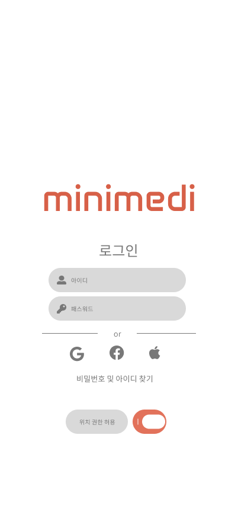
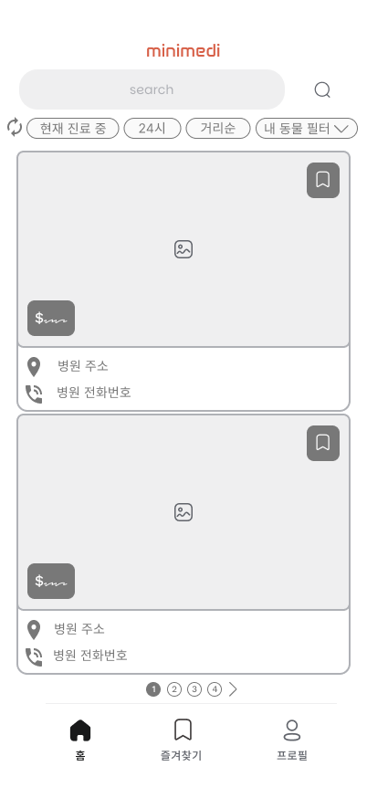
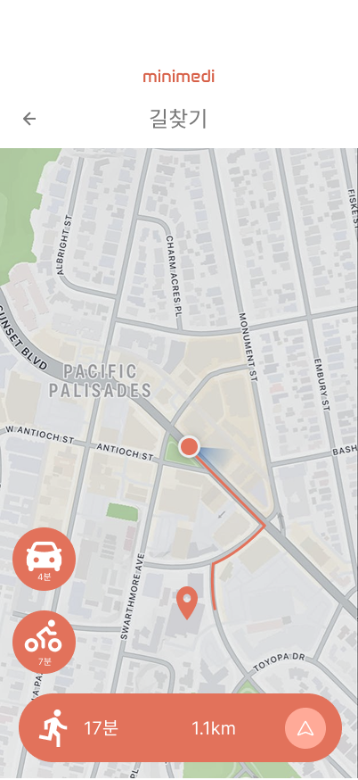
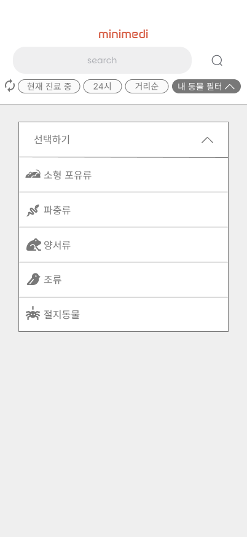
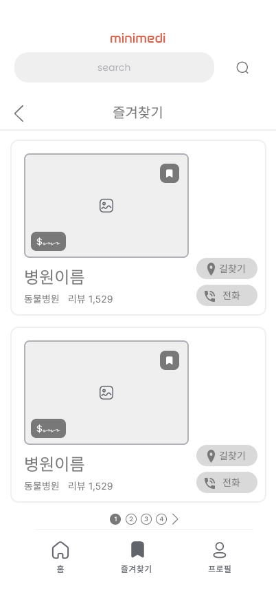
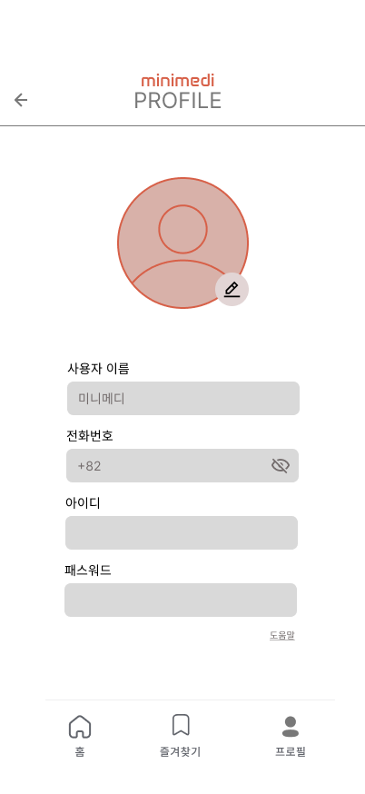

강아지·고양이가 아닌 소동물, 희귀동물을 위한
전문 병원을 쉽고 빠르게 찾을 수 있는 앱입니다.
MINIMEDI의 전체 화면 흐름과 기능 구조를 한눈에 확인하세요.
소동물·희귀동물을 키우는 분들이 겪는 공통된 어려움에서 MINIMEDI가 시작됐습니다.
햄스터, 토끼, 파충류 등 소동물을 진료해주는 병원이 어디 있는지 검색해도 잘 나오지 않습니다.
동물병원에 찾아갔지만 소동물은 보지 않는다는 말을 듣고 허탕치는 경험을 반복합니다.
반려동물이 갑자기 아플 때, 어디로 달려가야 할지 몰라 패닉 상태에서 시간을 낭비하게 됩니다.
믿을 수 있는 병원을 찾아도 다른 소동물 보호자들과 정보를 나눌 채널이 마땅치 않습니다.
소동물·희귀동물을 키우는 다양한 보호자를 인터뷰해 대표 페르소나를 도출했습니다.
소동물·희귀동물 보호자를 위해 특화된 핵심 기능들을 소개합니다.
동물 종류별로 진료 가능한 병원을 필터링해 바로 찾을 수 있습니다.
현재 위치에서 가장 가까운 소동물 전문 병원을 지도로 확인합니다.
마음에 드는 병원들을 즐겨찾기 목록에 저장해 간편히 확인합니다.
야간·주말에도 진료 가능한 응급 병원을 빠르게 찾아 안내합니다.
6개의 목업 이미지 공간입니다. 스크롤 시 하나씩 순차적으로 나타납니다.






기획부터 개발, 발표까지 AI와 나눈 실제 대화 예시입니다.
기획·디자인·개발·발표 전 단계에서 AI 도구를 협업 파트너로 사용한 경험을 정리했습니다.
| 단계 | 활용 목적 | 도구 | 빈도 |
|---|---|---|---|
| 기획 | 아이디어 구체화, 페르소나 설계, 기획서 초안 | ClaudeGoogle DocsGEMINI | ⌛⌛⌛⌛ |
| 디자인 | UI 레이아웃 제안, 컬러 시스템, 목업 생성 | FigmaClaude | ⌛⌛⌛⌛⌛ |
| 개발 | 화면 구현, 기능 로직, 오류 해결 | ClaudeAI studio | ⌛⌛⌛⌛ |
| 발표 | 포트폴리오 구성, 발표 스크립트 작성 | ClaudeChat GPTAntigravity | ⌛⌛⌛ |
아이디어 구상부터 최종 발표까지의 여정을 기록했습니다.
소동물 보호자 인터뷰, 경쟁 앱 분석, 페르소나 설정, 플로우차트 작성
와이어프레임 제작, 디자인 시스템 구성, 프로토타입 완성
화면 구현, 기능 테스트, 포트폴리오 완성, 최종 발표
MINIMEDI를 만들기 위해 사용한 툴킷입니다.
이 앱을 가장 잘 표현하는 핵심 키워드들입니다.